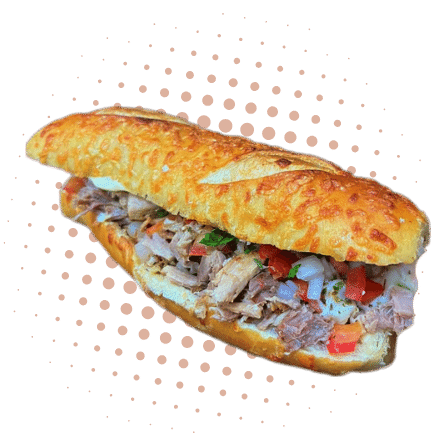

Venham provar os deliciosos lanches no C.Bastião !
Estamos no Ifood

O melhor sabor do Lanche de Pernil (acompanhado por um delicioso vinagrete, finalizado com molho especial e queijo mussarela) - Nas opções de pães: Baguete com parmesão ou Pão Francês tradicional. Também temos porções de Batata fritas "sequinhas e crocantes" com opções de adicionas de bacon, cheeddar e catupiry (original)
Horário de funcionamento:

R$ 28,99

R$ 18,99